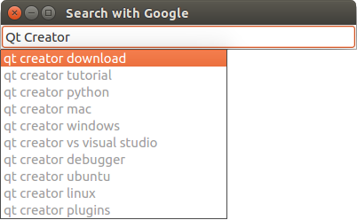

Google Suggest Example
The example uses the QNetworkAccessManager to obtain the list of search recommendations by Google as the user types into a QLineEdit.

The application makes use of the get function in QNetworkAccessManager to post a request and obtain the result of the search query sent to the Google search engine. The results returned are listed as clickable links appearing below the search box as a drop-down menu.
The widget is built up by a QLineEdit as the search box, and a QTreeView used as a popup menu below the search box.
GSuggestCompletion Class Declaration
This class implements an event filter and a number of functions to display the search results and to determent when and how to perform the search.
class GSuggestCompletion : public QObject { Q_OBJECT public: GSuggestCompletion(QLineEdit *parent = 0); ~GSuggestCompletion(); bool eventFilter(QObject *obj, QEvent *ev) Q_DECL_OVERRIDE; void showCompletion(const QStringList &choices); public slots: void doneCompletion(); void preventSuggest(); void autoSuggest(); void handleNetworkData(QNetworkReply *networkReply); private: QLineEdit *editor; QTreeWidget *popup; QTimer *timer; QNetworkAccessManager networkManager; };
The class connects to a QLineEdit and uses a QTreeWidget to display the results. A QTimer controls the start of the network requests that are executed using a QNetworkAccessManager.
GSuggestCompletion Class Implementation
We start by defining a constant containing the URL to be used in the Google queries. This is the basis for the query. The letters typed into the search box will be added to the query to perform the search itself.
#include "googlesuggest.h" #define GSUGGEST_URL "http://google.com/complete/search?output=toolbar&q=%1"
In the constructor, we set the parent of this GSuggestCompletion instance to be the QLineEdit passed in. For simplicity, the QLineEdit is also stored in the explicit editor member variable.
We then create a QTreeWidget as a toplevel widget and configure the various properties to give it the look of a popup widget. The widget is populated with the results by Google Suggest API request.
Furthermore, we install the GSuggestCompletion instance as an event filter on the QTreeWidget, and connect the itemClicked() signal with the doneCompletion() slot.
A single-shot QTimer is used to start the request when the user has stopped typing for 500 ms.
Finally, we connect the networkManagers finished() signal with the handleNetworkData() slot to handle the incoming data.
GSuggestCompletion::GSuggestCompletion(QLineEdit *parent): QObject(parent), editor(parent) { popup = new QTreeWidget; popup->setWindowFlags(Qt::Popup); popup->setFocusPolicy(Qt::NoFocus); popup->setFocusProxy(parent); popup->setMouseTracking(true); popup->setColumnCount(1); popup->setUniformRowHeights(true); popup->setRootIsDecorated(false); popup->setEditTriggers(QTreeWidget::NoEditTriggers); popup->setSelectionBehavior(QTreeWidget::SelectRows); popup->setFrameStyle(QFrame::Box | QFrame::Plain); popup->setHorizontalScrollBarPolicy(Qt::ScrollBarAlwaysOff); popup->header()->hide(); popup->installEventFilter(this); connect(popup, SIGNAL(itemClicked(QTreeWidgetItem*,int)), SLOT(doneCompletion())); timer = new QTimer(this); timer->setSingleShot(true); timer->setInterval(500); connect(timer, SIGNAL(timeout()), SLOT(autoSuggest())); connect(editor, SIGNAL(textEdited(QString)), timer, SLOT(start())); connect(&networkManager, SIGNAL(finished(QNetworkReply*)), this, SLOT(handleNetworkData(QNetworkReply*))); }
Since the QTreeWidget popup has been instantiated as a toplevel widget, the destructor has to delete it explicitly from memory to avoid a memory leak.
GSuggestCompletion::~GSuggestCompletion() { delete popup; }
The event filter handles mouse press and key press events that are delivered to the popup. For mouse press events we just hide the popup and return focus to the editor widget, and then return true to prevent further event processing.
Key event handling is implemented so that Enter and Return execute the selected link, while the Escape key hides the popup. Since we want to be able to navigate the list of suggestions using the different navigation keys on the keyboard we let Qt continue regular event processing for those by returning false from the eventFilter reimplementation.
For all other keys, the event will be passed on to the editor widget and the popup is hidden. This way the user's typing will not be interrupted by the popping up of the completion list.
bool GSuggestCompletion::eventFilter(QObject *obj, QEvent *ev) { if (obj != popup) return false; if (ev->type() == QEvent::MouseButtonPress) { popup->hide(); editor->setFocus(); return true; } if (ev->type() == QEvent::KeyPress) { bool consumed = false; int key = static_cast<QKeyEvent*>(ev)->key(); switch (key) { case Qt::Key_Enter: case Qt::Key_Return: doneCompletion(); consumed = true; case Qt::Key_Escape: editor->setFocus(); popup->hide(); consumed = true; case Qt::Key_Up: case Qt::Key_Down: case Qt::Key_Home: case Qt::Key_End: case Qt::Key_PageUp: case Qt::Key_PageDown: break; default: editor->setFocus(); editor->event(ev); popup->hide(); break; } return consumed; } return false; }
The showCompletion() function populates the QTreeWidget with the results returned from the query. It takes a QStringList of the suggested search terms.
void GSuggestCompletion::showCompletion(const QStringList &choices) { if (choices.isEmpty()) return; const QPalette &pal = editor->palette(); QColor color = pal.color(QPalette::Disabled, QPalette::WindowText); popup->setUpdatesEnabled(false); popup->clear(); for (int i = 0; i < choices.count(); ++i) { QTreeWidgetItem * item; item = new QTreeWidgetItem(popup); item->setText(0, choices[i]); item->setTextColor(0, color); } popup->setCurrentItem(popup->topLevelItem(0)); popup->resizeColumnToContents(0); popup->setUpdatesEnabled(true); popup->move(editor->mapToGlobal(QPoint(0, editor->height()))); popup->setFocus(); popup->show(); }
A QTreeWidgetItem is created for each index in the list and inserted into the QTreeWidget. Finally, we adjust position and size of the popup to make sure that it pops up in the correct position below the editor, and show it.
The doneCompletion() function, which is called by the event filter when either Enter or Return keys are pressed, stops the timer to prevent further requests and passes the text of the selected item to the editor. We then make the editor QLineEdit emit the returnPressed() signal, to which the application can connect to open the respective web page.
void GSuggestCompletion::doneCompletion() { timer->stop(); popup->hide(); editor->setFocus(); QTreeWidgetItem *item = popup->currentItem(); if (item) { editor->setText(item->text(0)); QMetaObject::invokeMethod(editor, "returnPressed"); } }
The autoSuggest() slot is called when the timer times out, and uses the text in the editor to build the complete search query. The query is then passed to the QNetworkAccessManager's get() function to start the request.
void GSuggestCompletion::autoSuggest() { QString str = editor->text(); QString url = QString(GSUGGEST_URL).arg(str); networkManager.get(QNetworkRequest(QString(url))); }
The function preventSuggest() stops the timer to prevent further requests from being started.
void GSuggestCompletion::preventSuggest() { timer->stop(); }
When the network request is finished, the QNetworkAccessManager delivers the data received from the server through the networkReply object.
void GSuggestCompletion::handleNetworkData(QNetworkReply *networkReply) { QUrl url = networkReply->url(); if (!networkReply->error()) { QStringList choices; QByteArray response(networkReply->readAll()); QXmlStreamReader xml(response); while (!xml.atEnd()) { xml.readNext(); if (xml.tokenType() == QXmlStreamReader::StartElement) if (xml.name() == "suggestion") { QStringRef str = xml.attributes().value("data"); choices << str.toString(); } } showCompletion(choices); } networkReply->deleteLater(); }
To extract the data from the reply we use the readAll() function, which is inherited from QIODevice and returns a QByteArray. Since this data is encoded in XML we can use a QXmlStreamReader to traverse the data and extract the search result as QStrings, which we can stream into two QStringLists used to populate the popup.
Finally, we schedule the QNetworkReply object for deletion using the deleteLater function.
SearchBox Class Declaration
The SearchBox class inherits QLineEdit and adds the protected slot doSearch().
A GSuggestCompletion member provides the SearchBox with the request functionality and the suggestions returned from the Google search engine.
#include <QLineEdit> class GSuggestCompletion; class SearchBox: public QLineEdit { Q_OBJECT public: SearchBox(QWidget *parent = 0); protected slots: void doSearch(); private: GSuggestCompletion *completer;
SearchBox Class Implementation
The search box constructor instantiates the GSuggestCompletion object and connects the returnPressed() signal to the doSearch() slot.
SearchBox::SearchBox(QWidget *parent): QLineEdit(parent) { completer = new GSuggestCompletion(this); connect(this, SIGNAL(returnPressed()),this, SLOT(doSearch())); setWindowTitle("Search with Google"); adjustSize(); resize(400, height()); setFocus(); }
The function doSearch() stops the completer from sending any further queries to the search engine.
Further, the function extracts the selected search phrase and opens it in the default web browser using QDesktopServices.
void SearchBox::doSearch() { completer->preventSuggest(); QString url = QString(GSEARCH_URL).arg(text()); QDesktopServices::openUrl(QUrl(url)); }
Files: